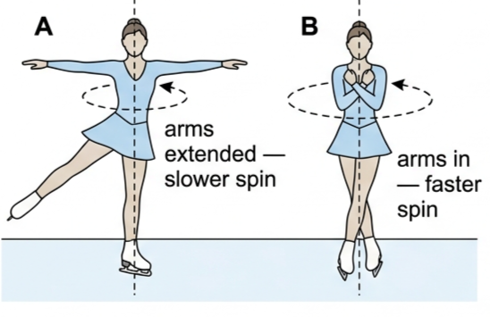
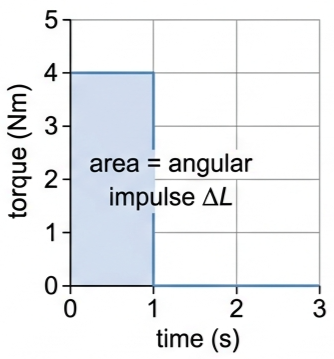
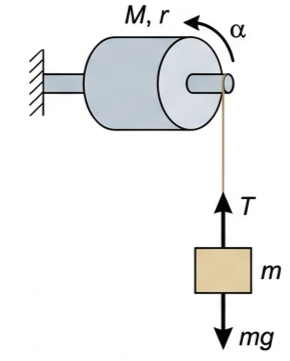
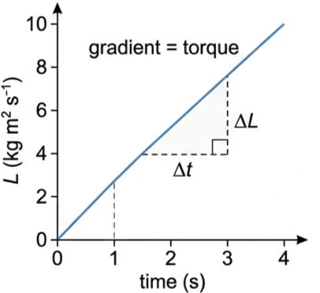
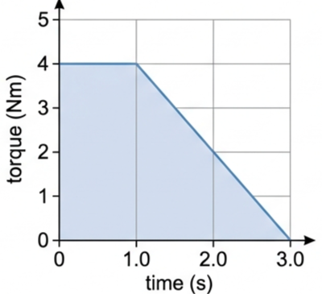
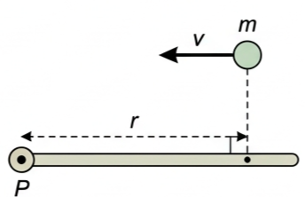

🤸 Hook – the skater who speeds up for free
A spinning ice skater starts a turn with her arms and one leg stretched out wide, turning slowly. As she pulls her arms and leg in tight to her body, she speeds up dramatically — with no extra push from anyone. She hasn't gained any energy from outside; she has simply shrunk her moment of inertia, and her angular momentum has to stay the same.

⚙️ Newton's second law for rotational motion
For linear motion, a resultant force F acting on a mass m produces an acceleration a, given by \(F = ma\). Rotational motion has an exact analogue: a resultant torque τ acting on an object with moment of inertia I produces an angular acceleration α.
τ here is the average torque. This equation is why moment of inertia matters so much: for the same torque, a larger I gives a smaller angular acceleration, exactly as a larger mass gives a smaller linear acceleration for the same force.
📐 Tool 3 (Mathematics) – direct and inverse proportionality
Two quantities are directly proportional if, when one increases by a factor x, the other increases by the same factor: \(y \propto x\), so \(x/y\) is constant. Check this by calculating the ratio for several data pairs, or by plotting an x–y graph and checking for a straight line through the origin.
| x | y | x/y |
|---|---|---|
| 0 | 0 | – |
| 0.32 | 1.6 | 0.20 |
| 0.81 | 4.2 | 0.19 |
| 1.46 | 9.9 | 0.20 |
| 2.51 | 12.8 | 0.20 |
| 6.43 | 30.0 | 0.21 |
| 10.9 | 55.2 | 0.20 |
Two quantities are inversely proportional if, when one increases by a factor x, the other decreases by the same factor: \(y \propto 1/x\), so \(xy\) is constant. Check this by multiplying pairs of values together, or by plotting y against \(1/x\).
| x | y | xy |
|---|---|---|
| 0 | – | – |
| 2.0 | 17 | 34 |
| 1.1 | 32 | 35 |
| 0.94 | 37 | 35 |
| 0.79 | 43 | 34 |
| 0.55 | 63 | 35 |
🔗 Angular momentum
An extended body rotating with angular speed ω has an angular momentum, L — the rotational equivalent of linear momentum \(p = mv\). It depends on both the moment of inertia of the object and its angular velocity.
This is exactly what happens to the skater above: pulling her arms in reduces I, and since L must stay constant, ω must increase. Gymnasts, divers and ballet dancers all use the same trick.
⏱️ Angular impulse
The action of a resultant torque τ acting for a time Δt constitutes an angular impulse, producing a change of angular momentum ΔL.
Forces (and torques) are rarely constant, so it is far simpler to talk about the overall effect of a torque acting over a time than to track how it varies moment to moment. The area under a torque–time graph equals the angular impulse (the change in angular momentum), whatever the shape of the graph.
🔬 Tool 3 (Mathematics) – propagating uncertainties in processed data
Processed data should never be quoted to more significant figures than the raw data used to calculate it.
For other functions (trig, logs), calculate the highest and lowest possible values and compare each with the mean value.
\(\tan 34^\circ = 0.6745\), \(\tan 33^\circ = 0.6494\), \(\tan 35^\circ = 0.7002\).
Larger absolute difference from the mean: \(0.7002 - 0.6745 = 0.0257\).
So \(\tan\theta = 0.67 \pm 0.03\) — quoted to the same number of significant figures as the original data.
📈 Graphs every examiner uses
| Graph type | Axes (X, Y) | Shape | What to read |
|---|---|---|---|
| Torque–time (idealised, constant torque) | Time / s · Torque / N m | Horizontal line of height τ over a width Δt | \(\Delta L = \tau \Delta t\), read directly as the rectangle's area |
| Torque–time (varying torque) | Time / s · Torque / N m | Any shape — rises, falls, curves | Area under the whole curve = angular impulse = ΔL, whatever the shape |
| Angular momentum–time | Time / s · L / kg m² s⁻¹ | Straight line for a constant resultant torque | Gradient = resultant torque, since \(\tau = \Delta L/\Delta t\) |


✍️ Worked example 1 – torque, angular acceleration and final velocity (A4.8)
a) Calculate the angular acceleration produced when a system with moment of inertia 1.23 kg m² is acted on by a resultant torque of 0.83 N m. b) If the system was already rotating at 2.7 rad s⁻¹, determine its angular velocity if the torque is applied for exactly 4 s. c) State the assumption you made.
\(\omega_f = \omega_i + \alpha t\)
b) \(\omega_f = 2.7 + (0.67 \times 4.0) = 5.4\ \text{rad s}^{-1}\).
c) There are no frictional forces acting on the system.
✍️ Worked example 2 – a falling mass unwinding a cylinder (A4.9)
A falling mass m is attached to a string wrapped around a cylinder of radius r and moment of inertia \(I = \tfrac12 Mr^2\). Derive an equation for the downward linear acceleration, a, of the mass.
Resultant force on falling mass: \(F = mg - T\), so \(a = F/m = (mg - \tfrac12Ma)/m\).

✍️ Worked example 3 – angular momentum of a spinning sphere (A4.11)
A sphere of mass 2.1 kg and radius 38 cm is spinning around a diameter at a rate of 44 rpm. Calculate its angular momentum.
\(= \tfrac25 \times 2.1 \times 0.38^2 \times 2\pi \times (44/60)\)
✍️ Worked example 4 – a disc gains a mass (A4.12)
A solid metal disc of mass 960 g and radius 8.8 cm rotates horizontally at 4.7 rad s⁻¹. a) Calculate its moment of inertia. b) Calculate the new angular velocity after a mass of 500 g is dropped quickly onto the disc at a distance of 6.0 cm from the centre.
Added mass: \(I_{\text{add}} = mr^2 = 0.5 \times (6.0\times10^{-2})^2\)
b) \(I_{\text{disc}}\omega_i = (I_{\text{disc}} + I_{\text{add}})\omega_f\)
b) \(I_{\text{add}} = 1.8\times10^{-3}\ \text{kg m}^2\), so \((3.7\times10^{-3})(4.7) = (5.5\times10^{-3})\omega_f\)
\(\omega_f = 3.2\ \text{rad s}^{-1}\).
✍️ Worked example 5 – angular impulse from a torque–time graph (A4.13)
a) Determine the angular impulse represented by the torque–time graph in Fig 5. b) If this impulse accelerated an object already rotating at 25 rad s⁻¹, calculate its final angular velocity, given a moment of inertia of 0.51 kg m².
\(\Delta L = I(\omega_f - \omega_i)\)
b) \(\omega_f - 25 = 8.0/0.51\), so \(\omega_f = 41\ \text{rad s}^{-1}\).

🌍 Real-world: skaters, divers and gymnasts
The ice skater's speed-up is one example of a general trick used across sport: changing your body's shape changes your moment of inertia, and angular momentum forces your angular velocity to compensate. A diver tucks into a ball to spin fast for a somersault, then straightens out to slow the spin before entering the water. Gymnasts and ballet dancers use exactly the same principle mid-air or mid-turn.
🚀 HL extension – collapsing stars and extreme spin
Conservation of angular momentum applies without exception, even to catastrophic astrophysical events. As a massive star's core collapses to form a neutron star, its radius shrinks by a huge factor with essentially no mass loss. Since \(I \propto r^2\), I falls enormously — and because \(L = I\omega\) is conserved, ω must rise enormously to compensate.
Challenge: a collapsing star's radius reduces by a factor of 1000, with no change in mass. By what factor does its rotation rate increase? (Answer: \(I \propto r^2\), so I falls by a factor of \(1000^2 = 10^6\). Since L is conserved, ω must increase by a factor of \(10^6\).)
⚠️ Trap corner – common mistakes
| Misconception | Correct view |
|---|---|
| An object moving in a straight line has zero angular momentum | It has angular momentum \(L = mvr\) about any point not on its line of motion — angular momentum depends on which point you choose |
| The tension in a string always equals the weight hanging from it | Only true in equilibrium. If the mass accelerates, resolve \(F = mg - T\) first — here \(T = \tfrac12Ma\), not mg |
| If a rotating system's radius increases, its angular momentum increases too | With no external torque, L stays exactly constant — only I and ω change to compensate for each other |
| Round a processed answer to as many figures as the calculator shows | Quote it to the same number of significant figures as the least precise piece of raw data used to calculate it |

Complete the statements:
✓ \(I = \tau/\alpha = 2.4/1.78 = 1.35\ \text{kg m}^2\); for a hoop about a diameter \(I = \tfrac12MR^2\), so \(M = 2I/R^2 = 2(1.35)/0.42^2 = 15.3\ \text{kg}\).
✓ Fractional uncertainties: \(\Delta\tau/\tau = 0.083\), \(\Delta\omega/\omega = 0.018\), \(\Delta t/t = 0.063\), so \(\Delta\alpha/\alpha = 0.080\) and \(\Delta I/I = 0.083+0.080 = 0.163\).
✓ \(\Delta R/R = 0.024\), doubled for \(R^2\) gives 0.048, so \(\Delta M/M = 0.163+0.048 = 0.211\).
✓ \(\Delta M = 0.211 \times 15.3 = 3.2\ \text{kg}\).
✓ \(M = 15 \pm 3\ \text{kg}\).
✓ \(\tau = 1.3\ \text{N m}\).
✓ \(\alpha = (115.2-31.4)/2.3 = 36.4\ \text{rad s}^{-2}\).
✓ \(I = \tau/\alpha = 112/36.4 = 3.1\ \text{kg m}^2\).
✓ \(\alpha = \tau/I = 2.26/17.3\).
✓ \(\alpha = 0.13\ \text{rad s}^{-2}\).
✓ \(\alpha = \tau/I = 7.9/1.2 = 6.6\ \text{rad s}^{-2}\).
✓ Starting from rest: \(\theta = \tfrac12\alpha t^2 = \tfrac12 \times 6.6 \times 2.0^2 = 13.2\ \text{rad}\).
✓ \(13.2/2\pi = 2.1\) rotations, confirming about two rotations.
✓ \(m = \dfrac{a(\tfrac12M)}{g-a} = \dfrac{2.5 \times 4.15}{9.8-2.5}\).
✓ \(m = 1.4\ \text{kg}\).
✓ \(L = I\omega = 0.210 \times 37\).
✓ \(L = 7.8\ \text{kg m}^2\text{s}^{-1}\).
✓ \(\omega = L/I = 0.74/0.126 = 5.9\ \text{rad s}^{-1}\).
✓ Convert: \(5.9 \times 60/2\pi \approx 56\) rpm.
✓ Conservation of angular momentum: \(1200 \times 0.56 = (1200+576)\omega_f\).
✓ \(\omega_f = 672/1776 = 0.38\ \text{rad s}^{-1}\).
✓ Assumption: no resultant external torque (frictionless bearing); child treated as a point mass at the rim.
✓ If the child simply steps off carrying the same tangential speed as the platform, she takes her share of angular momentum with her, leaving the merry-go-round still rotating at 0.38 rad s⁻¹ — it does not return to 0.56 rad s⁻¹.
✓ It could only speed back up if the child pushed off in a way that gave extra angular momentum back to the platform (e.g. jumping backwards relative to the rotation).
✓ The star's radius decreases enormously, and since \(I \propto r^2\), its moment of inertia falls by a much larger factor still.
✓ Because \(L = I\omega\) is conserved, ω must increase enormously to compensate for the huge drop in I, giving the extremely fast rotation observed.